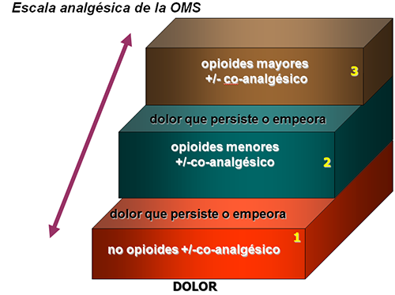

ICO 24h
MÓDULO 4 : Particularidades en la atención telefónica urgente del paciente onco-hematológico con necesidades paliativas
4.2.4 Tratamiento del dolor
En el tratamiento del paciente con dolor oncológico se deben tener en cuenta medidas farmacológicas, no farmacológicas, y prevención o tratamiento de los efectos secundarios, especialmente de los opioides.
Se recomienda el uso de la escala analgésica de la Organización Mundial de la Salud (OMS) con la que se consigue un buen control del dolor en aproximadamente el 80% de los pacientes. En el resto, se deberán contemplar otros tratamientos invasivos, o técnicas anestésicas.
Se describe a continuación cada escalón analgésico y se deberá indicar el siguiente escalón, si el control del dolor no es el adecuado. Es decir, la subida de un escalón a otro vendrá determinada por la intensidad de dolor percibido por el paciente. La calidad del dolor (si es nociceptivo, somático, neuropático…) también condicionará la indicación de co-analgésicos, que se deberán mantener a lo largo de la escalada analgésica. Por ejemplo, si por un dolor neuropático, se indican fármacos gabapentinoides, se deberán mantener a lo largo de la subida analgésica.
Primer escalón
En este primer escalón se indican analgésicos no opioides:
- Paracetamol: a dosis de 1gramo cada 6 –8 h/vo, rectal, ev.
- Antininflamatorios no esterioideos (AINES).

Segundo escalón
En este segundo escalón se indican analgésicos opioides menores:
- Tramadol: a dosis iniciales de 50 mg cada /6-8h/vo, sc, ev. pudiendo a aumentar a 100 mg cada 6-8h, siendo la dosis máxima 400 mg/d.
- Codeína: a dosis de 30-60 mg cada 6 horas, pudiendo llegar a dosis máximas recomendadas de 360 mg / día.
Tercer escalón
En este tercer escalón se indican opioides mayores:
- Morfina: se indica una dosis inicial de morfina de liberación corta de 5 mg cada 4 horas, para iniciar la titulación del dolor. Se irá aumentando la dosis hasta llegar a la dosis efectiva, que permita el paso a la morfina de liberación retardada, con una toma cada 12 horas.
- Fentanilo trasdérmico: se suele indicar dosis iniciales de 25 mcg (o en ocasiones de 12 mcg) cada 3 días. Hay que tener presente la indicación de fentanilo de liberación rápida para las crisis de dolor incidentales (sea por via oral, ev, sc, intranasal).
- Oxicodona: existen las dos formulaciones, de liberación rápida para titular inicialmente un dolor mal controlado, y pasar a la dosis de liberación prolongada cuando se consigue un control óptimo del dolor.
- Metadona: se suelen indicar dosis de 3-5 mg cada 8 horas via oral, para titular dosis hasta llegar a la dosis más eficaz para el paciente.
- Buprenorfina en parche TTS: se suele indicar dosis de parche 35 mcg: la mitad o una cuarta parte en casos de pacientes frágiles, cada 4 días.
- Tapentadol: indicación de dolor con componente neuropático. Se puede iniciar 25 mg cada 12h y titular según la respuesta analgésica. Atención a pacientes con medicamentos ISRS (inhibidores selectivos de la recaptación de serotonina) o pacientes con HTA, por riesgo de crisis serotoninérgicas.